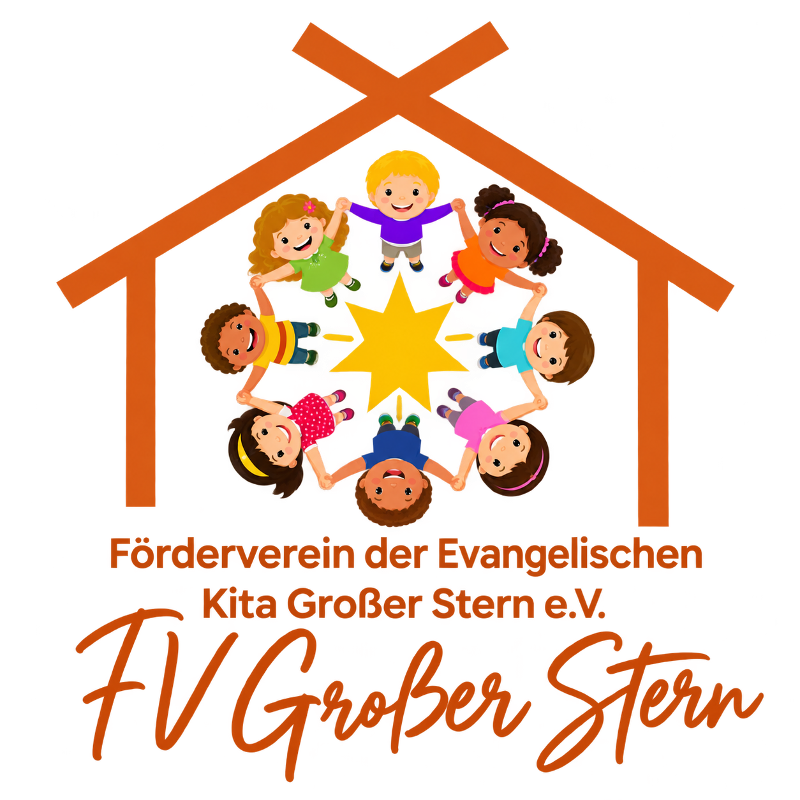

🛝
Spielen & Bewegen
Zusätzliche Spiel- und Bewegungsmaterialien für drinnen und draußen.

Förderverein der Evangelischen Kita Großer Stern e.V.
Wir unterstützen die Kita dabei, besondere Projekte, Anschaffungen, Aktionen und Erlebnisse für die Kinder möglich zu machen.
Unsere Projekte
Als frisch gegründeter Förderverein möchten wir Schritt für Schritt Ideen sammeln und Projekte umsetzen, die direkt den Kindern zugutekommen.
Zusätzliche Spiel- und Bewegungsmaterialien für drinnen und draußen.
Materialien und Projekte, die Neugier, Fantasie und gemeinsames Entdecken unterstützen.
Unterstützung bei Festen, Aktionen und Ausflügen, die in Erinnerung bleiben.
Mitglied werden
Mit deiner Mitgliedschaft unterstützt du Projekte, Aktionen und Anschaffungen, die unseren Kindern zugutekommen.
Du kannst deinen Jahresbeitrag selbstverständlich auch höher festlegen. Jeder zusätzliche Euro hilft uns dabei, noch mehr Ideen für die Kinder umzusetzen.
Den Antrag kannst du herunterladen, ausfüllen und anschließend per E-Mail oder ausgedruckt bei uns abgeben.
Spenden
Auch ohne Mitgliedschaft kannst du unsere Arbeit unterstützen. Mit deiner Spende hilfst du uns dabei, besondere Projekte, Aktionen und Anschaffungen für die Kinder zu ermöglichen.
Vielen Dank für deine Unterstützung!
Empfänger:
Förderverein der Evangelischen Kita Großer Stern e.V.
IBAN:
DE49 4501 2000 0011 5410
Bank:
Sparkasse Herford
Verwendungszweck:
Spende
Kontakt
Du hast Fragen, eine Projektidee oder möchtest dich im Förderverein einbringen?
FVKitaGrosserStern@gmx.de